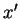
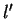
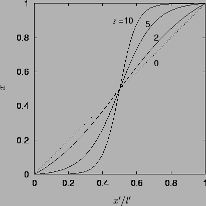
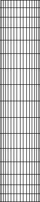

Next: Results
Up: Vapour transport in Fastflo
Previous: Implementation of unusual terms
Contents
The finite element mesh
Fastflo has two mesh generators for rectangular domains.
The first, a C program called unit.c,
uses a square grid (thereby limiting the domain aspect ratio to
the quotient of two integers) and the second, a built-in, creates an
unstructured grid from triangular elements.
Neither of these is particularly satisfactory
since a graded structured quadrilateral mesh is preferred for
rectangular cavity flows (Cleary 1995b).
The square mesh generator is
easily adapted though, by simple stretching of the nodal coordinates
while preserving connectivity. This could be achieved in Fasttalk, the language of Fastflo, or, as the mesh data file consists
of simply formatted ascii, with a short C program. Here, unit.c was
modified to include the stretching function recommended (originally for finite
difference grids) by Vinokur (1983):
where  and  are the nodal coordinate and domain dimension of the
unstretched mesh and  is the stretching factor. The function can be
applied with different values of to each of the coordinates,
is the stretching factor. The function can be
applied with different values of to each of the coordinates,  and
and
 (the values of being afterwards multiplied by
(the values of being afterwards multiplied by  ). The function is
plotted for various values of in figure 5.2.
). The function is
plotted for various values of in figure 5.2.
Figure 5.2:
Vinokur's (1983) symmetric stretching function.
|  |
The advantage of a nonuniform grid in this problem is that the mass fraction
gradients near the vertical walls can be calculated more accurately with
smaller elements, while a lesser number of elements overall is obtained
by using larger elements in the core. Further, a very fine mesh can be
used near the corners, where the velocity boundary conditions are
singular--a problem first described by Jhaveri et al.
(1981; §3.3.3), who also prescribed this
remedy. An example of a mesh created by such a procedure is shown in
figure 5.3.
Figure 5.3:
A 16 16 mesh for a domain of aspect ratio
16 mesh for a domain of aspect ratio
 with stretching factor
with stretching factor  in both directions.
in both directions.
|  |
Next: Results
Up: Vapour transport in Fastflo
Previous: Implementation of unusual terms
Contents
Geordie McBain
2001-01-27